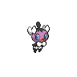

📖 英語版の図鑑説明
Even when nobody seems to be around, Gothita can still be heard making a muted cry. Many believe it’s speaking to something only it can see.
日本語訳
誰もいないように見えても、かすかな鳴き声を発している。自分にしか見えない何かに話しかけていると考えられている。
📝 この図鑑文に出てくる英単語
| 英単語 | 意味 | 品詞 | レベル |
|---|---|---|---|
| nobody | だれも〜ない | 代名詞 | 中2 |
| making | 作っている | 動詞 | 中1 |
| muted | おさえられた | 形容詞 | 大学 |
| believe | 信じる | 動詞 | 中2 |
| speaking | 話している | 動詞 | 中1 |
文法ポイント even when 〜 は「たとえ〜でも」「〜なのに」という意味で、ふつうなら予想される結果とちがうことを表します。
seems to be around は「seem/appear to + 動詞」で「〜するように見える、〜らしい」という意味です。
💡 英語名「Gothita」の由来
英語名「Gothita」は、goth（ゴシック・ファッション）がもとになっていると考えられている。ドイツ語の名前は「Mollimorba」で、mollig（ぽっちゃりした）、morbid（病的な）から作られている。
出典 Bulbapedia
📊 ゴチムの種族値
HP45
こうげき30
ぼうぎょ50
とくこう55
とくぼう65
すばやさ45
合計 290
❓ よくある質問
- ゴチムの英語名は？
- ゴチムの英語名は「Gothita」です。
- ゴチムの英語名「Gothita」の由来は？
- 英語名「Gothita」は、goth（ゴシック・ファッション）がもとになっていると考えられている。ドイツ語の名前は「Mollimorba」で、mollig（ぽっちゃりした）、morbid（病的な）から作られている。
- ゴチムは英語版の図鑑でどう説明されている？
- 「Even when nobody seems to be around, Gothita can still be heard making a muted cry. Many believe it’s speaking to something only it can see.」と書かれています。日本語にすると「誰もいないように見えても、かすかな鳴き声を発している。自分にしか見えない何かに話しかけていると考えられている。」という意味です。
ゴチムは第5世代（イッシュ地方）のポケモンです。第5世代（イッシュ地方）の英語名一覧 →